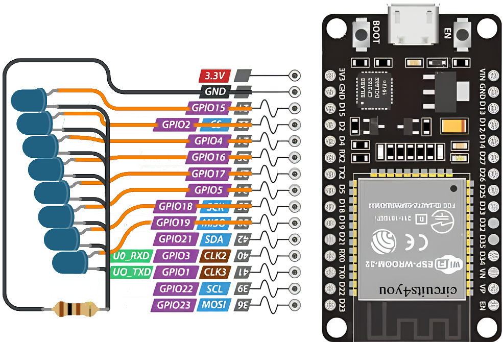

💡 Що потрібно?
- ESP32
- Кілька світлодіодів (наприклад, 4)
- Резистори 220 Ом
- Макетна плата та дроти
🔌 Підключення
Підключіть кожен світлодіод до окремого GPIO (наприклад: 15,2,4,16). Катоди — до GND через резистори.
🎆 Код анімації
from machine import Pin
import time
led1 = Pin(15, Pin.OUT)
led2 = Pin(2, Pin.OUT)
led3 = Pin(4, Pin.OUT)
led4 = Pin(16, Pin.OUT)
while True:
led1.on()
time.sleep(0.1)
led1.off()
led2.on()
time.sleep(0.1)
led2.off()
led3.on()
time.sleep(0.1)
led3.off()
led4.on()
time.sleep(0.1)
led4.off()
Кожен світлодіод засвічується по черзі, створюючи ефект "біжучого вогника".